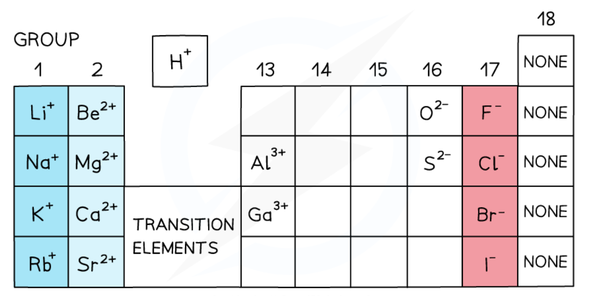

2 Atoms, molecules and stoichiometry
Relative masses, moles, formulae and reacting quantities
2 Atoms, molecules and stoichiometry
本章对应 CIE 9701 AS Chemistry 的 Atoms, molecules and stoichiometry。内容覆盖 relative atomic / molecular / formula mass、the mole、Avogadro constant、empirical and molecular formulae，以及 reacting masses、limiting reagents、solutions、gas volumes 与 percentage yield。
Learning objectives
学完本章后，你应该能够：
- define and calculate relative isotopic mass, relative atomic mass, relative molecular mass and relative formula mass;
- use the mole and Avogadro constant to convert between mass, amount and number of particles;
- calculate the volume of a gas at room temperature and pressure;
- determine empirical and molecular formulae from composition data;
- write formulae for ionic compounds and balance chemical equations;
- use balanced equations to calculate reacting masses, solution concentrations and gas volumes;
- identify a limiting reagent and calculate theoretical yield and percentage yield;
- write net ionic equations by removing spectator ions.
2.1 Relative masses of atoms and molecules
Relative isotopic mass and relative atomic mass
The relative isotopic mass of an isotope is its mass compared with \(\frac{1}{12}\) of the mass of one carbon-12 atom. It has no unit.
The relative atomic mass, \(A_r\), is the weighted mean mass of an atom of an element compared with \(\frac{1}{12}\) of the mass of one carbon-12 atom. It takes account of the abundance of each isotope:
\[A_r=\frac{\sum(\text{isotopic mass}\times\text{percentage abundance})}{100}\]
For example, if an element has isotope masses 10.0 and 11.0 with abundances 20% and 80%:
\[A_r=\frac{(10.0\times20)+(11.0\times80)}{100}=10.8\]
Do not use a simple arithmetic mean unless the isotopes have equal abundance.
Worked example · Weighted isotope average
Calculating the relative atomic mass of chlorine
Chlorine contains \(^{35}\ce{Cl}\) with abundance 75.8% and \(^{37}\ce{Cl}\) with abundance 24.2%. Calculate \(A_r(\ce{Cl})\).
\[A_r(\ce{Cl})=\frac{(35\times75.8)+(37\times24.2)}{100}=35.48\approx35.5\]
Relative molecular mass and relative formula mass
The relative molecular mass, \(M_r\), is the sum of the relative atomic masses of all atoms in one molecule. For water:
\[M_r(\ce{H2O})=(2\times1.0)+16.0=18.0\]
The relative formula mass is used for ionic compounds and giant covalent structures, which do not contain separate molecules. It is calculated in the same way from the formula unit. For ammonium sulfate:
\[M_r[\ce{(NH4)2SO4}]=(2\times14.0)+(8\times1.0)+32.1+(4\times16.0)=132.1\]
Relative masses are ratios, so they have no units.
2.2 The mole and Avogadro constant
The mole
One mole of any substance contains the same number of specified particles. This number is the Avogadro constant, \(L\) or \(N_A\):
\[L=6.02\times10^{23}\ \mathrm{mol^{-1}}\]
The particles may be atoms, molecules, ions, electrons or formula units. Always state which particles are being counted.
\[n=\frac{N}{L}\qquad N=nL\]
where \(n\) is amount in mol and \(N\) is number of particles.
Moles, mass and molar mass
The molar mass has the same numerical value as \(A_r\) or \(M_r\), but its unit is \(\mathrm{g\ mol^{-1}}\):
\[n=\frac{m}{M}\qquad m=nM\]
For a compound, use its relative molecular or formula mass as the numerical value of \(M\). For example, 0.250 mol of \(\ce{CO2}\) has mass:
\[m=0.250\times44.0=11.0\ \mathrm{g}\]
Worked example · Atoms in a compound
Counting atoms in water
Calculate the total number of atoms in 1.00 mol of water.
One water molecule contains 3 atoms. One mole contains \(6.02\times10^{23}\) molecules:
\[N(\text{atoms})=3\times6.02\times10^{23}=1.806\times10^{24}\ \text{atoms}\]
Molar gas volume at RTP
At room temperature and pressure (RTP), one mole of any gas occupies 24.0 dm\(^3\). Therefore:
\[n(\text{gas})=\frac{V(\text{gas in dm}^3)}{24.0}\]
Use \(24.0\ \mathrm{dm^3\ mol^{-1}}\) for RTP questions. Convert \(\mathrm{cm^3}\) to \(\mathrm{dm^3}\) by dividing by 1000.
2.3 Formulae and equations
Empirical and molecular formulae
The empirical formula is the simplest whole-number ratio of atoms in a compound. The molecular formula shows the actual number of each atom in one molecule.
To determine an empirical formula from masses or percentages:
- convert each mass or percentage to moles by dividing by \(A_r\);
- divide every value by the smallest value;
- multiply all ratios by a small integer if necessary to obtain whole numbers;
- write the empirical formula.
If the molecular mass is known:
\[\text{multiplier}=\frac{M_r(\text{compound})}{M_r(\text{empirical formula})}\]
Then multiply every subscript in the empirical formula by this integer.
Worked example · Empirical formula
Finding the formula from composition
A compound contains 52.2% carbon, 13.0% hydrogen and 34.8% oxygen by mass. Find its empirical formula.
For a 100 g sample:
\[n(\ce{C})=\frac{52.2}{12.0}=4.35,\quad n(\ce{H})=\frac{13.0}{1.0}=13.0,\quad n(\ce{O})=\frac{34.8}{16.0}=2.175\]
Divide by 2.175: \(\ce{C2H6O}\). If \(M_r=92\), the multiplier is \(92/46=2\), so the molecular formula is \(\ce{C4H12O2}\).
Formulae of ions and compounds
An ionic compound is electrically neutral. Combine ions in the smallest whole-number ratio that makes the total charge zero:
| Ions | Formula |
|---|---|
| \(\ce{Na+}\) and \(\ce{Cl-}\) | \(\ce{NaCl}\) |
| \(\ce{Mg^{2+}}\) and \(\ce{Cl-}\) | \(\ce{MgCl2}\) |
| \(\ce{Al^{3+}}\) and \(\ce{SO4^{2-}}\) | \(\ce{Al2(SO4)3}\) |
| \(\ce{Ca^{2+}}\) and \(\ce{PO4^{3-}}\) | \(\ce{Ca3(PO4)2}\) |
Use brackets around a polyatomic ion when more than one copy is needed. A formula unit is the simplest ratio of ions in the lattice.

Balanced symbol equations and ionic equations
Balance equations by changing coefficients, never subscripts. The coefficients give mole ratios. Include state symbols when requested: \(\ce{(s)}\), \(\ce{(l)}\), \(\ce{(g)}\), and \(\ce{(aq)}\).
An ionic equation includes only the reacting particles. Remove spectator ions that are unchanged on both sides. For precipitation of silver chloride:
\[\ce{Ag+(aq)+Cl-(aq)->AgCl(s)}\]
Weak electrolytes such as ethanoic acid are normally kept as molecules in ionic equations.
2.4 Reacting masses, solutions and gases
The stoichiometry pathway
For every reacting-quantity calculation:
- write and balance the equation;
- convert the known quantity to moles;
- use the coefficient ratio to find the required moles;
- convert to the requested mass, concentration, volume or number of particles.
\[n=\frac{m}{M}\qquad n=cV\qquad n=\frac{V_{gas}}{24.0}\]
For solution concentration, \(V\) must be in \(\mathrm{dm^3}\):
\[c=\frac{n}{V}\]
Limiting reagent
The limiting reagent is completely used up first and determines the maximum amount of product. Do not choose the reactant with the smallest mass; compare the available moles with the mole ratio in the balanced equation.
For \(\ce{2H2+O2->2H2O}\), 1 mol \(\ce{O2}\) requires 2 mol \(\ce{H2}\). If less than 2 mol \(\ce{H2}\) is available per mol \(\ce{O2}\), hydrogen is limiting.
Worked example · Limiting reagent and yield
Percentage yield
The percentage yield compares the actual product obtained with the theoretical product:
\[\%\text{ yield}=\frac{\text{actual yield}}{\text{theoretical yield}}\times100\]
If the theoretical mass is 4.86 g and the actual mass is 2.61 g:
\[\%\text{ yield}=\frac{2.61}{4.86}\times100=53.7\%\]
Use the theoretical yield from the balanced equation as the denominator; the actual yield cannot exceed it in a correctly measured experiment.
Common unit conversions and checks
- \(1000\ \mathrm{cm^3}=1.00\ \mathrm{dm^3}\);
- \(1\ \mathrm{dm^3}=1\ \mathrm{L}\);
- at RTP, \(24.0\ \mathrm{dm^3}\) gas = 1 mol;
- concentration in \(\mathrm{mol\ dm^{-3}}\) multiplied by volume in \(\mathrm{dm^3}\) gives moles;
- keep extra figures during calculations and round the final answer appropriately.
The most common errors are forgetting to balance first, using \(\mathrm{cm^3}\) in \(cV\), using 24.0 for a volume already in \(\mathrm{cm^3}\), and ignoring the limiting reagent.
Chapter checklist
Multiple choice questions
2 Atoms, molecules and stoichiometry - Multiple Choice: Easy
Question 1 · Relative atomic mass · 1.2 Choice Easy Q1
What is meant by the relative atomic mass of an element?
Show explanation
B. Relative atomic mass is a weighted mean because naturally occurring elements may contain several isotopes.
Question 2 · Isotopes · 1.2 Choice Easy Q2
Which statement correctly describes two isotopes of the same element?
Show explanation
A. Isotopes have the same proton number, so they are the same element, but different neutron numbers.
Question 3 · Relative formula mass · 1.2 Choice Easy Q3
What is the relative formula mass of \((\ce{NH4})2\ce{SO4}\)? Use \(A_r\): N = 14.0, H = 1.0, S = 32.1 and O = 16.0.
Show explanation
C. \(M_r=(2\times14.0)+(8\times1.0)+32.1+(4\times16.0)=132.1\).
Question 4 · Weighted isotope abundance · 1.2 Choice Easy Q4
An element contains 91.75% of an isotope with mass 55.0 and 8.25% of an isotope with mass 56.0. What is its relative atomic mass?
Show explanation
D. \(A_r=(55.0\times0.9175)+(56.0\times0.0825)=55.0825\), which rounds to 55.083.
Question 5 · Avogadro constant · 1.2 Choice Easy Q5
What is the number of molecules in \(500\ \mathrm{cm^3}\) of oxygen gas at RTP? Take the molar gas volume as \(24.0\ \mathrm{dm^3\ mol^{-1}}\).
Show explanation
D. \(500\ \mathrm{cm^3}=0.500\ \mathrm{dm^3}\), so \(n=0.500/24.0=0.0208\ \mathrm{mol}\) and \(N=0.0208\times6.02\times10^{23}=1.25\times10^{22}\).
Question 6 · Balancing equations · 1.2 Choice Easy Q6
Which set of coefficients balances the equation?
\[\ce{Mg3N2 + H2O -> Mg(OH)2 + NH3}\]
Show explanation
A. Three magnesium atoms require \(3\ce{Mg(OH)2}\); two nitrogen atoms give \(2\ce{NH3}\), requiring six water molecules.
2 Atoms, molecules and stoichiometry - Multiple Choice: Medium
Question 1 · Hydrated salts · 1.2 Choice Medium Q1
A hydrated carbonate has formula \(\ce{X2CO3.10H2O}\) and relative formula mass 286. What is element X? Use \(A_r\): C = 12.0, O = 16.0 and H = 1.0.
Show explanation
C. The anhydrous part contributes \(12+48=60\) and the water contributes \(180\), so \(2A_r(X)=286-240=46\) and \(A_r(X)=23\).
Question 2 · Gas stoichiometry · 1.2 Choice Medium Q2
Nitrogen reacts with excess hydrogen. \(2.00\ \mathrm{dm^3}\) of nitrogen is available at standard conditions and 15.0% reacts. What mass of ammonia forms? Use a molar gas volume of \(22.4\ \mathrm{dm^3\ mol^{-1}}\) for this question.
\[\ce{N2 + 3H2 -> 2NH3}\]
Show explanation
C. Reacted nitrogen is \(2.00\times0.150/22.4=0.0134\ \mathrm{mol}\); ammonia is \(0.0268\ \mathrm{mol}\), giving approximately \(0.455\ \mathrm{g}\).
Question 3 · Reacting amounts · 1.2 Choice Medium Q3
Chlorine reacts with cold aqueous sodium hydroxide:
\[\ce{Cl2 + 2NaOH -> NaCl + NaOCl + H2O}\]
What mass of \(\ce{NaOCl}\) forms from \(0.125\ \mathrm{mol}\) of \(\ce{Cl2}\) with excess \(\ce{NaOH}\)? Use \(M_r(\ce{NaOCl})=74.5\).
Show explanation
B. The mole ratio is \(1:1\), so \(n(\ce{NaOCl})=0.125\) and mass \(=0.125\times74.5=9.31\ \mathrm{g}\).
Question 4 · Thermal decomposition · 1.2 Choice Medium Q4
When \(7.40\ \mathrm{g}\) of \(\ce{Mg(NO3)2}\) is heated, what mass of nitrogen dioxide forms? Use \(M_r(\ce{Mg(NO3)2})=148\).
Show explanation
A. \(7.40/148=0.0500\ \mathrm{mol}\) of salt forms \(0.100\ \mathrm{mol}\) of \(\ce{NO2}\), so the mass is \(0.100\times46.0=4.60\ \mathrm{g}\).
Question 5 · Empirical formula from a gas · 1.2 Choice Medium Q5
A \(0.144\ \mathrm{g}\) aluminium compound burns to form \(72.0\ \mathrm{cm^3}\) of \(\ce{CO2}\) at RTP. Which is its formula? Use \(A_r(\ce{Al})=27.0\).
Show explanation
D. \(n(\ce{CO2})=0.0720/24.0=0.00300\ \mathrm{mol}\), so the sample contains \(0.00300\ \mathrm{mol}\) C. The aluminium-to-carbon ratio is \(0.00533:0.00300\approx4:3\).
Question 6 · Limiting reagent · 1.2 Choice Medium Q6
What metal reacts completely with \(1.15\ \mathrm{g}\) of metal and \(300\ \mathrm{cm^3}\) of oxygen at RTP to form an oxide containing \(\ce{O^{2-}}\)? Choose from Ca, Na, K and Mg.
Show explanation
D. \(n(\ce{O2})=0.300/24.0=0.0125\ \mathrm{mol}\). For magnesium, \(1.15/24.3=0.0473\ \mathrm{mol}\) and the required oxygen is \(0.0237\ \mathrm{mol}\), so oxygen is available in the expected limiting ratio.
Question 7 · Particles in a sample · 1.2 Choice Medium Q7
A coin has mass \(10.0\ \mathrm{g}\) and contains 20.0% nickel by mass. How many nickel atoms are present? Use \(A_r(\ce{Ni})=58.7\).
Show explanation
D. Nickel mass is \(2.00\ \mathrm{g}\), so \(n=2.00/58.7=0.0341\ \mathrm{mol}\) and \(N=2.05\times10^{22}\) atoms.
2 Atoms, molecules and stoichiometry - Multiple Choice: Hard
Question 1 · Combustion and gas absorption · 1.2 Choice Hard Q1
Carbon is burned in a limited amount of oxygen. Half the carbon forms \(\ce{CO2}\) and half forms \(\ce{CO}\). The carbon oxides are passed through excess aqueous sodium hydroxide. Which gas volume remains if the starting carbon sample is \(1.00\ \mathrm{g}\) and the gas volume is measured at RTP?
Show explanation
D. The amount of carbon monoxide is \(0.5/12.0=0.0417\ \mathrm{mol}\), so the remaining gas volume is \(0.0417\times24.0=1.00\ \mathrm{dm^3}\).
Question 2 · Neutralisation of carbonate · 1.2 Choice Hard Q2
An eggshell is 5.0% \(\ce{CaCO3}\) by mass. Each egg contains a \(50.0\ \mathrm{g}\) shell, and the carbonate in the shell neutralises \(50.0\ \mathrm{cm^3}\) of \(2.00\ \mathrm{mol\ dm^{-3}}\) ethanoic acid. How many eggshells are needed?
\[\ce{CaCO3 + 2CH3COOH -> Ca(CH3COO)2 + H2O + CO2}\]
Show explanation
C. Acid amount is \(0.0500\times2.00=0.100\ \mathrm{mol}\), requiring \(0.0500\ \mathrm{mol}\) carbonate, or \(5.00\ \mathrm{g}\). Each shell contains \(2.50\ \mathrm{g}\), so two shells are required.
Question 3 · Titration of a basic oxide · 1.2 Choice Hard Q3
An oxide sample is dissolved in \(250\ \mathrm{cm^3}\) of solution. A \(25.0\ \mathrm{cm^3}\) portion requires \(15.0\ \mathrm{cm^3}\) of \(2.00\ \mathrm{mol\ dm^{-3}}\) sulfuric acid. If the oxide is \(\ce{K2O}\), what mass was present?
\[\ce{K2O + H2SO4 -> K2SO4 + H2O}\]
Show explanation
C. The aliquot contains \(0.0150\times2.00=0.0300\ \mathrm{mol}\) acid; the whole solution contains \(0.300\ \mathrm{mol}\), hence \(0.300\ \mathrm{mol}\) \(\ce{K2O}\) and mass \(0.300\times94.2=28.3\ \mathrm{g}\).
Question 4 · Redox titration · 1.2 Choice Hard Q4
In a ferrochrome sample, \(1.00\ \mathrm{g}\) requires \(13.1\ \mathrm{cm^3}\) of \(0.100\ \mathrm{mol\ dm^{-3}}\) \(\ce{K2Cr2O7}\). The chromium(VI) reagent oxidises iron(II) according to a \(1:6\) mole ratio. What percentage by mass of the sample is iron?
Show explanation
A. Dichromate amount is \(0.0131\times0.100=0.00131\ \mathrm{mol}\); iron amount is \(6\times0.00131=0.00786\ \mathrm{mol}\). Its mass is \(0.00786\times55.8=0.439\ \mathrm{g}\), or 43.9%.
Question 5 · Combustion gases · 1.2 Choice Hard Q5
Equal volumes of methane and ethane are sparked with excess oxygen. The carbon dioxide is removed by aqueous potassium hydroxide. What fraction of the original hydrocarbon volume is absorbed?
Show explanation
B. One volume methane gives one volume carbon dioxide; one volume ethane gives two. Thus two starting volumes produce three volumes absorbed, i.e. 150% of the hydrocarbon volume.
Question 6 · Redox mole ratio · 1.2 Choice Hard Q6
In acid solution, \(\ce{Sn^{2+}}\) reduces \(\ce{MnO4^-}\) to \(\ce{Mn^{2+}}\). What amount of \(\ce{Mn^{2+}}\) can form from \(9.50\ \mathrm{g}\) of \(\ce{SnCl2}\)? Take \(M_r(\ce{SnCl2})=190\) and use the ratio \(5\ce{Sn^{2+}}:2\ce{MnO4^-}\).
Show explanation
B. \(9.50/190=0.0500\ \mathrm{mol}\) \(\ce{Sn^{2+}}\). The ratio gives \(n(\ce{MnO4^-})=0.0200\ \mathrm{mol}\) and hence \(0.0200\ \mathrm{mol}\) \(\ce{Mn^{2+}}\).
Question 7 · Gas volume from an equation · 1.2 Choice Hard Q7
For the balanced reaction below, what volume of nitrogen forms at RTP when \(0.783\ \mathrm{g}\) of \(\ce{Ba(NO3)2}\) reacts? Use \(M_r(\ce{Ba(NO3)2})=261\).
\[\ce{10Al + 3Ba(NO3)2 -> 3BaO + 5Al2O3 + 3N2}\]
Show explanation
C. \(n(\ce{Ba(NO3)2})=0.783/261=0.00300\ \mathrm{mol}\), and the equation gives the same amount of \(\ce{N2}\); \(V=0.00300\times24.0=0.0720\ \mathrm{dm^3}=72.0\ \mathrm{cm^3}\).
Structured questions
2 Atoms, molecules and stoichiometry - Structured Questions: Easy
Example 1 · Relative masses and formula units · 1.2 SQ Easy Q1
(a) Define relative isotopic mass and relative atomic mass. [2 marks]
(b) State what the symbols \(A_r\) and \(M_r\) represent. Explain the difference between relative molecular mass and relative formula mass. [3 marks]
(c) Calculate the relative formula mass of \(\ce{MgO}\), \(\ce{H2SO4}\), \((\ce{NH4})3\ce{PO4}\) and \(\ce{CuSO4.5H2O}\). Use \(A_r\): H = 1.0, C = 12.0, N = 14.0, O = 16.0, P = 31.0, S = 32.1, Mg = 24.3, Cu = 63.5. [4 marks]
Show mark scheme / model answer
- (a) Relative isotopic mass compares an isotope with \(\frac{1}{12}\) of a carbon-12 atom. Relative atomic mass is the weighted mean of the isotopic masses of an element on the same scale.
- (b) \(A_r\) is relative atomic mass and \(M_r\) is relative molecular or formula mass. A molecular mass refers to one molecule; a formula mass is used for an ionic lattice or giant structure.
- (c) \(M_r(\ce{MgO})=40.3\); \(M_r(\ce{H2SO4})=98.1\); \(M_r((\ce{NH4})3\ce{PO4})=149.0\); \(M_r(\ce{CuSO4.5H2O})=249.5\).
Example 2 · Moles and particles · 1.2 SQ Easy Q2
(a) State the Avogadro constant and explain what one mole of a substance contains. [2 marks]
(b) Calculate the number of molecules and the total number of atoms in \(1.00\ \mathrm{mol}\) of water. [3 marks]
(c) Calculate the number of sodium ions, carbonate ions and total ions in \(1.00\ \mathrm{mol}\) of \(\ce{Na2CO3}\). [3 marks]
Show mark scheme / model answer
- (a) \(L=6.02\times10^{23}\ \mathrm{mol^{-1}}\); one mole contains \(6.02\times10^{23}\) specified particles.
- (b) \(6.02\times10^{23}\) water molecules. Each has three atoms, so total atoms \(=1.806\times10^{24}\).
- (c) There are \(2\times6.02\times10^{23}=1.204\times10^{24}\) sodium ions and \(6.02\times10^{23}\) carbonate ions. Total ions \(=1.806\times10^{24}\).
Example 3 · Empirical and molecular formulae · 1.2 SQ Easy Q3
A compound contains 40.0% carbon, 6.7% hydrogen and 53.3% oxygen by mass. Its relative molecular mass is 180.
(a) Determine its empirical formula. [3 marks]
(b) Determine its molecular formula. [2 marks]
(c) Explain why percentages can be treated as masses in a 100 g sample. [1 mark]
Show mark scheme / model answer
- (a) For 100 g: C \(=40.0/12.0=3.33\); H \(=6.7/1.0=6.70\); O \(=53.3/16.0=3.33\). Divide by 3.33 to obtain \(\ce{CH2O}\).
- (b) Empirical formula mass \(=30.0\); multiplier \(=180/30.0=6\), so molecular formula \(\ce{C6H12O6}\).
- (c) In a 100 g sample, each percentage has the same numerical value in grams.
2 Atoms, molecules and stoichiometry - Structured Questions: Medium
Example 4 · Limiting reagent and silane · 1.2 SQ Medium Q1
Magnesium reacts with a mixture containing \(0.500\ \mathrm{g}\) of quartz sand, \(0.500\ \mathrm{g}\) of powdered silica and \(2.40\ \mathrm{g}\) of magnesium. The silica is represented by \(\ce{SiO2}\).
(a) Write an equation for the formation of magnesium oxide from silica and identify the limiting reagent using amounts in moles. [4 marks]
(b) Silicon magnesium, \(\ce{Mg2Si}\), reacts with hydrochloric acid to form silane, \(\ce{SiH4}\). Write the balanced equation and classify the reaction of silane with oxygen as combustion, redox or neutralisation. [3 marks]
(c) Calculate the maximum mass of \(\ce{HSiCl3}\) formed if \(35.125\ \mathrm{g}\) of silicon reacts according to \(\ce{Si + 3HCl -> HSiCl3 + H2}\). [3 marks]
Show mark scheme / model answer
- (a) \(\ce{2Mg + SiO2 -> 2MgO + Si}\). \(n(\ce{Mg})=2.40/24.3=0.0988\ \mathrm{mol}\); \(n(\ce{SiO2})\) in the two samples is about \(0.0167\ \mathrm{mol}\). Magnesium is in excess for this equation; silica is limiting.
- (b) \(\ce{Mg2Si + 4HCl -> 2MgCl2 + SiH4}\). Burning silane is a combustion reaction and also a redox reaction.
- (c) \(n(\ce{Si})=35.125/28.1=1.25\ \mathrm{mol}\). The equation gives \(1.25\ \mathrm{mol}\) \(\ce{HSiCl3}\); mass \(=1.25\times135.5=169\ \mathrm{g}\).
Example 5 · Hydrated salts · 1.2 SQ Medium Q2
A hydrated cobalt sulfate has formula \(\ce{CoSO4.xH2O}\) and relative formula mass 173.0. Use \(A_r\): Co = 59.0, S = 32.0, O = 16.0 and H = 1.0.
(a) Calculate the value of \(x\). [3 marks]
(b) A \(2.00\ \mathrm{g}\) sample of the hydrate is heated to constant mass. The residue is \(1.09\ \mathrm{g}\). Calculate the amount of water removed. [2 marks]
(c) State why heating is continued to constant mass. [1 mark]
Show mark scheme / model answer
- (a) The anhydrous part has mass \(59.0+32.0+64.0=155.0\). Water contributes \(18.0x=173.0-155.0=18.0\), so \(x=1\) and the formula is \(\ce{CoSO4.H2O}\).
- (b) Water lost \(=0.91\ \mathrm{g}\); amount \(=0.91/18.0=0.0506\ \mathrm{mol}\).
- (c) To ensure all water of crystallisation has been removed and the mass is no longer changing.
Example 6 · Concentration and gas volume · 1.2 SQ Medium Q3
Hydrogen reacts with nitrogen:
\[\ce{N2 + 3H2 -> 2NH3}\]
(a) Calculate the amount of nitrogen in \(10.0\ \mathrm{dm^3}\) of nitrogen gas at RTP. [1 mark]
(b) Calculate the volume of hydrogen needed for complete reaction with this nitrogen. [2 marks]
(c) A solution contains \(0.250\ \mathrm{mol}\) of ammonia in \(500\ \mathrm{cm^3}\). Calculate its concentration in \(\mathrm{mol\ dm^{-3}}\). [2 marks]
Show mark scheme / model answer
- (a) \(n=10.0/24.0=0.417\ \mathrm{mol}\).
- (b) \(n(\ce{H2})=3\times0.417=1.25\ \mathrm{mol}\); volume \(=1.25\times24.0=30.0\ \mathrm{dm^3}\).
- (c) \(500\ \mathrm{cm^3}=0.500\ \mathrm{dm^3}\), so \(c=0.250/0.500=0.500\ \mathrm{mol\ dm^{-3}}\).
2 Atoms, molecules and stoichiometry - Structured Questions: Hard
Example 7 · Combustion with a limiting gas · 1.2 SQ Hard Q1
A \(1.00\ \mathrm{g}\) sample of carbon reacts with a limited amount of oxygen. Half of the carbon forms \(\ce{CO2}\) and half forms \(\ce{CO}\).
(a) Write the two balanced equations for the reactions. [2 marks]
(b) Calculate the total amount of oxygen atoms used. [2 marks]
(c) The mixture of carbon oxides is passed through excess sodium hydroxide solution. Calculate the volume of gas remaining at RTP. [2 marks]
Show mark scheme / model answer
- (a) \(\ce{C + O2 -> CO2}\) and \(\ce{2C + O2 -> 2CO}\).
- (b) Carbon amount is \(1.00/12.0=0.0833\ \mathrm{mol}\); half forms each oxide. Oxygen atoms used \(=0.0417\times2+0.0417\times1=0.125\ \mathrm{mol}\).
- (c) Sodium hydroxide absorbs \(\ce{CO2}\) while \(\ce{CO}\) remains. The remaining amount is \(0.0417\ \mathrm{mol}\), so its volume is \(0.0417\times24.0=1.00\ \mathrm{dm^3}\).
Example 8 · Carbonate neutralisation · 1.2 SQ Hard Q2
An eggshell contains 5.0% \(\ce{CaCO3}\) by mass. Ethanoic acid reacts with the carbonate:
\[\ce{CaCO3 + 2CH3COOH -> Ca(CH3COO)2 + H2O + CO2}\]
(a) Calculate the amount of ethanoic acid in \(50.0\ \mathrm{cm^3}\) of \(2.00\ \mathrm{mol\ dm^{-3}}\) solution. [1 mark]
(b) Calculate the mass of \(\ce{CaCO3}\) neutralised. [2 marks]
(c) If each eggshell has mass \(50.0\ \mathrm{g}\), calculate the number of eggshells needed. [2 marks]
Show mark scheme / model answer
- (a) \(n=cV=2.00\times0.0500=0.100\ \mathrm{mol}\).
- (b) Carbonate amount \(=0.100/2=0.0500\ \mathrm{mol}\); mass \(=0.0500\times100=5.00\ \mathrm{g}\).
- (c) One shell contains \(0.050\times50.0=2.50\ \mathrm{g}\) \(\ce{CaCO3}\), so \(5.00/2.50=2\) shells.
Example 9 · Titration of potassium oxide · 1.2 SQ Hard Q3
A sample of \(\ce{K2O}\) is dissolved and made up to \(250\ \mathrm{cm^3}\). A \(25.0\ \mathrm{cm^3}\) portion requires \(15.0\ \mathrm{cm^3}\) of \(2.00\ \mathrm{mol\ dm^{-3}}\) sulfuric acid.
\[\ce{K2O + H2SO4 -> K2SO4 + H2O}\]
(a) Calculate the amount of sulfuric acid used in the aliquot. [1 mark]
(b) Calculate the amount and mass of \(\ce{K2O}\) in the original sample. [4 marks]
(c) Explain why the aliquot volume must be converted to \(\mathrm{dm^3}\) before using \(n=cV\). [1 mark]
Show mark scheme / model answer
- (a) \(n=2.00\times0.0150=0.0300\ \mathrm{mol}\).
- (b) The equation is 1:1, so the aliquot contains \(0.0300\ \mathrm{mol}\) \(\ce{K2O}\). The full solution contains \(10\times0.0300=0.300\ \mathrm{mol}\); mass \(=0.300\times94.2=28.3\ \mathrm{g}\).
- (c) The concentration unit is \(\mathrm{mol\ dm^{-3}}\), so the volume must be in \(\mathrm{dm^3}\) for the units to cancel correctly.
Example 10 · Iron percentage by redox titration · 1.2 SQ Hard Q4
A \(1.00\ \mathrm{g}\) ferrochrome sample is dissolved. The iron(II) ions require \(13.1\ \mathrm{cm^3}\) of \(0.100\ \mathrm{mol\ dm^{-3}}\) dichromate solution. In the redox reaction, one mole of dichromate reacts with six moles of iron(II).
(a) Calculate the amount of dichromate used. [1 mark]
(b) Calculate the amount and mass of iron in the sample. [3 marks]
(c) Calculate the percentage by mass of iron. [1 mark]
Show mark scheme / model answer
- (a) \(n=0.100\times0.0131=0.00131\ \mathrm{mol}\).
- (b) \(n(\ce{Fe^{2+}})=6\times0.00131=0.00786\ \mathrm{mol}\); mass of iron \(=0.00786\times55.8=0.439\ \mathrm{g}\).
- (c) Percentage \(=(0.439/1.00)\times100=43.9\%\).
Original question PDFs
- 1.2 Atoms, Molecules - Stoichiometry - Structured Questions - Easy
- 1.2 Atoms, Molecules - Stoichiometry - Structured Questions - Medium
- 1.2 Atoms, Molecules - Stoichiometry - Structured Questions - Hard
- 1.2 Atoms, Molecules - Stoichiometry - Multiple Choice - Easy
- 1.2 Atoms, Molecules - Stoichiometry - Multiple Choice - Medium
- 1.2 Atoms, Molecules - Stoichiometry - Multiple Choice - Hard